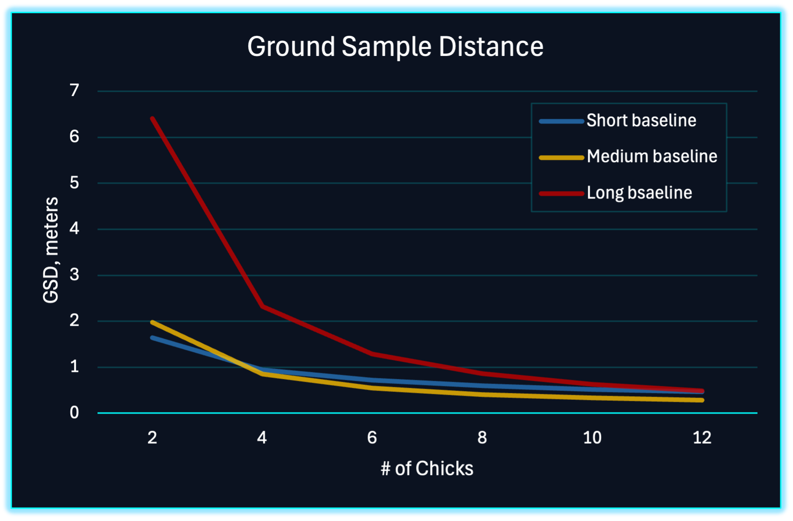

Satellite Capabilities for a Changing World
Weatherwave is building a U.S.-based lean satellite production facility to deliver rapidly deployable, American-built space capabilities for weather, environmental monitoring, disaster response, Earth science, and national security. Our architecture is engineered for missions where cadence, calibration, and resilience are mission-critical.

Weather, Disaster Response, and Earth Science
The United States depends on high quality space based measurements for weather forecasting, environmental monitoring, and Earth system understanding. Weatherwave is building a cooperative small satellite architecture that works alongside existing systems to increase temporal sampling, improve resilience, and shorten the time from new instrument concept to on orbit data.
First priority is operational weather and environmental sensing. Research, technology demonstration, and new observing concepts ride on the same platform, so advances in science directly strengthen operational capability.
Operational Weather and Forecasting
Weatherwave flocks provide high quality radiometry and environmental sensing using coordinated small satellites. The architecture is designed to support and complement existing national systems by providing:
- Rapid refresh and continuous technology insertion
- Increased temporal sampling for severe weather awareness
- Resilient architecture with no single points of failure
Kaizen style iterative improvements ensure the constellation evolves alongside national weather and hazard forecasting needs.
Disaster Response and Environmental Events
Fire, flood, hurricane, and volcanic activity require rapid updates and flexible tasking. Weatherwave provides:
- Persistent revisit during evolving crises
- Graceful degradation under asset loss
- Multi angle coverage for complex events and smoke or cloud obscuration
Agencies receive actionable insights on timelines that match real response operations.
Earth Science and Research Missions
The same production line that supports operational missions also supports research and advanced concepts. Weatherwave enables:
- Flight opportunities for new instruments on practical timelines
- Constellation experiments in multi satellite sensing and data fusion
- Rapid iteration from demonstration to operational capability
Research is not an afterthought. It is built into the way the system is designed and manufactured.
National Security and Intelligence Missions
Modern national security depends on more than individual exquisite systems. It requires persistent awareness, rapid deployment of new capabilities, and architectures that continue to operate under stress. Weatherwave is designed to give defense and intelligence customers these advantages at national scale.
Purpose Built for Government Missions
Many low Earth orbit imaging constellations were designed primarily for commercial markets and map level imagery. Weatherwave is designed from the start for government grade weather, environmental, and intelligence missions, where calibration, nighttime capability, and responsiveness are central requirements. Our system is not a loose network of cameras. It is a coordinated sensing platform.
Persistent High Cadence Revisit
Many existing constellations revisit targets every few hours. Weatherwave’s distributed multi flock architecture is designed to provide refresh intervals measured in minutes over prioritized regions. That cadence enables updated situational awareness for coastal operations, logistics nodes, and other high value areas.
Resilience Through Replication
Instead of a small number of billion dollar single points of failure, Weatherwave deploys many satellites that work together. Loss of individual assets does not end the mission. The network adapts, reroutes, and improves over time. This is an architecture designed for contested and uncertain environments.
Intelligence, Surveillance, and Reconnaissance
ISR increasingly depends on high revisit, multi phenomenology sensing, and reliable change detection rather than isolated single looks. Weatherwave provides:
- High cadence observations across areas of interest
- Multi sensor fusion for dependable detection and tracking
- Automated cueing of exquisite assets through persistent monitoring
The objective is simple. Give decision makers a continuously updated picture instead of periodic snapshots.
Cooperative Sensing, Not Independent Cameras
Traditional small satellites work alone and produce isolated snapshots. Weatherwave flocks measure as coordinated teams, with multi angle and multi phenomenology observations fused into richer, more stable data products. This supports persistent detection, robust change analysis, and environmental or intelligence insight at operational tempo.
Rapid Deployment of New Capabilities
Weatherwave’s U.S. based production line supports fast integration and flight of new sensors. When a payload meets specification, it can be integrated, tested, and launched on the next available mission, so new capability reaches orbit on timelines measured in weeks rather than years.
This responsiveness closes the gap between emerging needs, new instrument concepts, and operational data.
Performance for National Security & Intelligence Missions
National security and intelligence customers need medium-resolution imagery and environmental data at operational cadence, not just a few times per day. Weatherwave’s Flocks are designed so that adding more Chicks and carefully increasing baseline separation both improve effective ground resolution. Our lean factory and modular architecture reduce costs, enabling the addition of numerous Flocks to rapidly improve revisit tempo.
Resolution Gains from Cooperative Sensing
Improved Resolution for Smallsats
Weatherwave’s Flocks deliver medium-resolution imagery at operational cadence. The chart illustrates a model-based estimate of effective ground sample distance (GSD) as a function of Chick count and intra-flock baseline.
For small flocks, shorter baselines perform best. As Chick count grows, longer baselines become viable and enable finer effective GSD. The underlying model combines diffraction limits, multi-node synthesis, and increasing formation-keeping noise at larger separations. Values are illustrative, but the trend is key: coordinated Flocks can significantly outperform isolated smallsats at the same aperture size.
Operational Cadence Thropugh Scalable Constellations
Many government missions care as much about cadence as they do about spatial resolution. Weatherwave’s architecture scales revisit performance by adding Flocks over time rather than waiting for a single large replacement satellite.
The notional curve shows how revisit time decreases as additional Flocks are deployed in carefully chosen orbits. The values are approximate and depend on orbital geometry, latitude, and targeting assumptions, but the behavior is robust: doubling the number of Flocks roughly halves the time between observations over priority regions, pushing Weatherwave toward near-continuous coverage for high-value areas.